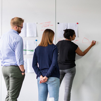

Background
My Experience and Education Overview
-
November 2023 - Present
IT Architecture Expert
42 Lyon Auvergne-Rhône-Alpes
Specialized in IT architecture and system design through hands-on professional training focused on projects.
-

Communication and Marketing Officer
Champagne Pierre Laurent
Led communication initiatives during the pandemic, managing projects to enhance visibility for a family-run producer in a market dominated by larger brands.
-
Master in Tourism
University of Lyon 2
Completed a Master's in Tourism, specializing in sustainable development and destination marketing strategies, with an emphasis on promoting sustainable tourism and managing travel destinations.
-
Communication Manager
AJ-France
Managed communication strategies, led project management efforts, and coordinated various initiatives to enhance the company's visibility and engagement.
-
International Travel Counselor & Tour Planner
HIS | Hankyu travel international | NTS
Gained hands-on experience across multiple companies, contributing to various projects in the international travel industry.
-
Bachelor in English Linguistics
University of Nagoya
Graduated with a major in English linguistics, focusing on generative grammar and Noam Chomsky's theories of language structure.